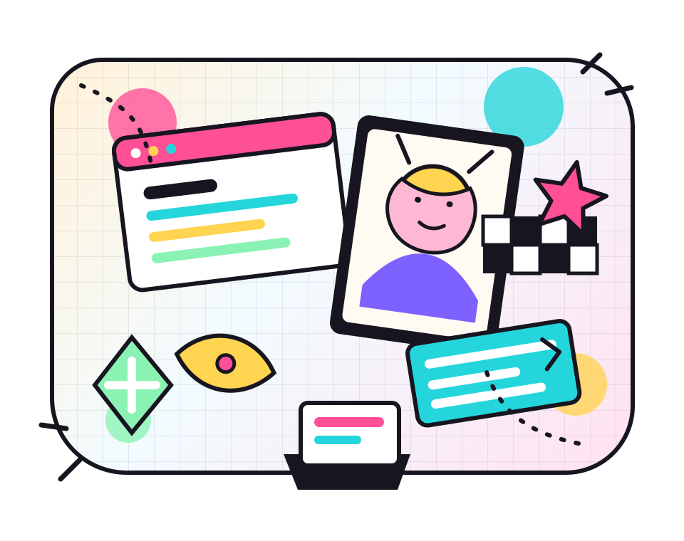

当前工程
把“正式主页”和“私人主页”分开
学术主页负责体面地摆 CV、课程资料和研究；这个站负责随便一点： 发自己做的小网站、吐槽、同人式审美、生活记录和没那么完整的想法。
private, casual, a little noisy
一个不太正式的个人小站。这里可以放自己做的网站、课程之外的想法、 游戏和番剧的碎片、突然想写下来的日常，还有那些“先做了再说”的页面实验。

now page
当前工程
学术主页负责体面地摆 CV、课程资料和研究；这个站负责随便一点： 发自己做的小网站、吐槽、同人式审美、生活记录和没那么完整的想法。
今日 BGM
键盘、网页、咖啡因和一点舞台灯。不是很正式，但很像真的在生活。
想保留
一些网页和想法不用等到完美。它们像存档点，记录当时的兴趣和手感。
web shelf
diary fragments
学术主页太像展柜了。私人主页应该像房间：桌上有没收好的线、开着的网页、 还没写完的句子，以及突然被喜欢的作品击中的瞬间。
一段游戏感想、一张页面截图、一个网页小玩具、一份读书记录，或者只是 “今天想把按钮做成荧光色”的理由。
这个站不需要每篇都像论文。它可以有草稿、偏爱、试错和暂时没想清楚的东西。
fandom booth
视觉方向先靠乐队舞台、竞速应援、贴纸墙和收藏夹来定调。 之后你可以把它改成更邦多利、更赛马娘，或者更混沌的个人审美墙。
changelog